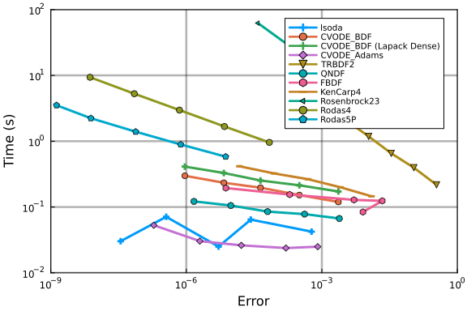
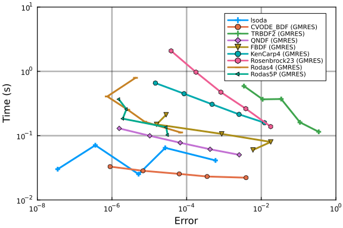
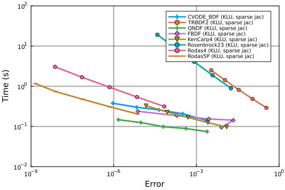
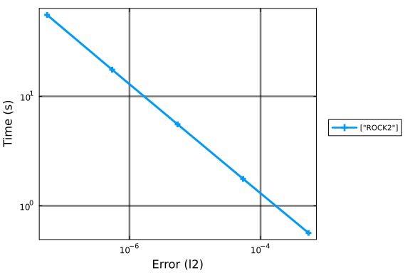
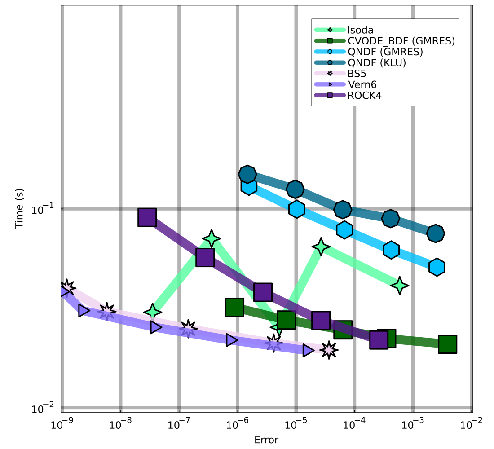

Egfr_net Work-Precision Diagrams
The following benchmark is of 356 ODEs with 3749 terms that describe a chemical reaction network. This egfr_net model was used as a benchmark model in Gupta et al.. It describes the epidermal growth factor receptor signalling system Blinov et al.. We use ReactionNetworkImporters to load the BioNetGen model files as a Catalyst model, and then use ModelingToolkit to convert the Catalyst network model to ODEs.
using DiffEqBase, OrdinaryDiffEq, Catalyst, ReactionNetworkImporters,
Sundials, Plots, DiffEqDevTools, ODEInterface, ODEInterfaceDiffEq,
LSODA, TimerOutputs, LinearAlgebra, ModelingToolkit, BenchmarkTools,
LinearSolve
gr()
const to = TimerOutput()
tf = 10.0
# generate ModelingToolkit ODEs
@timeit to "Parse Network" prnbng = loadrxnetwork(BNGNetwork(), joinpath(@__DIR__, "Models/egfr_net.net"))
show(to)
rn = prnbng.rn
obs = [eq.lhs for eq in observed(rn)]
@timeit to "Create ODESys" osys = convert(ODESystem, rn)
show(to)
tspan = (0.,tf)
@timeit to "ODEProb No Jac" oprob = ODEProblem{true, SciMLBase.FullSpecialize}(osys, Float64[], tspan, Float64[])
show(to);Parsing parameters...done
Creating parameters...done
Parsing species...done
Creating species...done
Creating species and parameters for evaluating expressions...done
Parsing and adding reactions...done
Parsing groups...done
──────────────────────────────────────────────────────────────────────────
Time Allocations
─────────────────────── ────────────────────────
Tot / % measured: 265ms / 99.6% 76.4MiB / 100.0%
Section ncalls time %tot avg alloc %tot avg
──────────────────────────────────────────────────────────────────────────
Parse Network 1 264ms 100.0% 264ms 76.4MiB 100.0% 76.4MiB
──────────────────────────────────────────────────────────────────────────
──────────────────────────────────────────────────────────────────────────
Time Allocations
─────────────────────── ────────────────────────
Tot / % measured: 937ms / 94.4% 365MiB / 99.5%
Section ncalls time %tot avg alloc %tot avg
──────────────────────────────────────────────────────────────────────────
Create ODESys 1 620ms 70.1% 620ms 287MiB 79.0% 287MiB
Parse Network 1 264ms 29.9% 264ms 76.4MiB 21.0% 76.4MiB
──────────────────────────────────────────────────────────────────────────
──────────────────────────────────────────────────────────────────────────
─
Time Allocations
─────────────────────── ───────────────────────
─
Tot / % measured: 2.08s / 97.4% 726MiB / 99.7%
Section ncalls time %tot avg alloc %tot av
g
──────────────────────────────────────────────────────────────────────────
─
ODEProb No Jac 1 1.14s 56.4% 1.14s 360MiB 49.8% 360Mi
B
Create ODESys 1 620ms 30.6% 620ms 287MiB 39.6% 287Mi
B
Parse Network 1 264ms 13.0% 264ms 76.4MiB 10.6% 76.4Mi
B
──────────────────────────────────────────────────────────────────────────
─@timeit to "ODEProb SparseJac" sparsejacprob = ODEProblem{true, SciMLBase.FullSpecialize}(osys, Float64[], tspan, Float64[], jac=true, sparse=true)
show(to)──────────────────────────────────────────────────────────────────────────
────
Time Allocations
─────────────────────── ────────────────────
────
Tot / % measured: 50.6s / 99.9% 30.8GiB / 100.0%
Section ncalls time %tot avg alloc %tot
avg
──────────────────────────────────────────────────────────────────────────
────
ODEProb SparseJac 1 48.5s 96.0% 48.5s 30.1GiB 97.7% 30.
1GiB
ODEProb No Jac 1 1.14s 2.3% 1.14s 360MiB 1.1% 36
0MiB
Create ODESys 1 620ms 1.2% 620ms 287MiB 0.9% 28
7MiB
Parse Network 1 264ms 0.5% 264ms 76.4MiB 0.2% 76.
4MiB
──────────────────────────────────────────────────────────────────────────
────@show numspecies(rn) # Number of ODEs
@show numreactions(rn) # Apprx. number of terms in the ODE
@show length(parameters(rn)); # Number of Parametersnumspecies(rn) = 356
numreactions(rn) = 3749
length(parameters(rn)) = 43Time ODE derivative function compilation
As compiling the ODE derivative functions has in the past taken longer than running a simulation, we first force compilation by evaluating these functions one time.
u = ModelingToolkit.varmap_to_vars(nothing, species(rn); defaults=ModelingToolkit.defaults(rn))
du = copy(u)
p = ModelingToolkit.varmap_to_vars(nothing, parameters(rn); defaults=ModelingToolkit.defaults(rn))
@timeit to "ODE rhs Eval1" oprob.f(du,u,p,0.)
@timeit to "ODE rhs Eval2" oprob.f(du,u,p,0.)
sparsejacprob.f(du,u,p,0.)We also time the ODE rhs function with BenchmarkTools as it is more accurate given how fast evaluating f is:
@btime oprob.f($du,$u,$p,0.)5.895 μs (2 allocations: 1.31 KiB)Picture of the solution
sol = solve(oprob, CVODE_BDF(), saveat=tf/1000., reltol=1e-5, abstol=1e-5)
plot(sol; idxs=obs, legend=false, fmt=:png)For these benchmarks we will be using the time-series error with these saving points.
Generate Test Solution
@time sol = solve(oprob, CVODE_BDF(), abstol=1/10^14, reltol=1/10^14)
test_sol = TestSolution(sol);1.636235 seconds (583.83 k allocations: 58.275 MiB, 39.91% compilation ti
me)Setups
Sets plotting defaults
default(legendfontsize=7,framestyle=:box,gridalpha=0.3,gridlinewidth=2.5)Declares a plotting helper function
function plot_settings(wp)
times = vcat(map(wp -> wp.times, wp.wps)...)
errors = vcat(map(wp -> wp.errors, wp.wps)...)
xlimit = 10 .^ (floor(log10(minimum(errors))), ceil(log10(maximum(errors))))
ylimit = 10 .^ (floor(log10(minimum(times))), ceil(log10(maximum(times))))
return xlimit,ylimit
endplot_settings (generic function with 1 method)Sets tolerances
abstols = 1.0 ./ 10.0 .^ (6:10)
reltols = 1.0 ./ 10.0 .^ (6:10);Implicit Work-Precision Diagrams
Benchmarks for implicit solvers.
Declare solvers (using default linear solver)
We designate the solvers we wish to use.
setups = [
Dict(:alg=>lsoda()),
Dict(:alg=>CVODE_BDF()),
Dict(:alg=>CVODE_BDF(linear_solver=:LapackDense)),
Dict(:alg=>CVODE_Adams()),
Dict(:alg=>TRBDF2()),
Dict(:alg=>QNDF()),
Dict(:alg=>FBDF()),
Dict(:alg=>KenCarp4()),
Dict(:alg=>Rosenbrock23()),
Dict(:alg=>Rodas4()),
Dict(:alg=>Rodas5P())
];Plot Work-Precision Diagram (using default linear solver)
Finally, we generate a work-precision diagram for the selection of solvers.
wp = WorkPrecisionSet(oprob,abstols,reltols,setups;error_estimate=:l2,
saveat=tf/10000.,appxsol=test_sol,maxiters=Int(1e9),numruns=100)
names = ["lsoda" "CVODE_BDF" "CVODE_BDF (Lapack Dense)" "CVODE_Adams" "TRBDF2" "QNDF" "FBDF" "KenCarp4" "Rosenbrock23" "Rodas4" "Rodas5P"]
xlimit,ylimit = plot_settings(wp)
plot(wp;label=names,xlimit=xlimit,ylimit=ylimit)
Declare solvers (using GMRES linear solver)
We designate the solvers we wish to use.
setups = [
Dict(:alg=>lsoda()),
Dict(:alg=>CVODE_BDF(linear_solver=:GMRES)),
Dict(:alg=>TRBDF2(linsolve=KrylovJL_GMRES())),
Dict(:alg=>QNDF(linsolve=KrylovJL_GMRES())),
Dict(:alg=>FBDF(linsolve=KrylovJL_GMRES())),
Dict(:alg=>KenCarp4(linsolve=KrylovJL_GMRES())),
Dict(:alg=>Rosenbrock23(linsolve=KrylovJL_GMRES())),
Dict(:alg=>Rodas4(linsolve=KrylovJL_GMRES())),
Dict(:alg=>Rodas5P(linsolve=KrylovJL_GMRES()))
];Plot Work-Precision Diagram (using GMRES linear solver)
Finally, we generate a work-precision diagram for the selection of solvers.
wp = WorkPrecisionSet(oprob,abstols,reltols,setups;error_estimate=:l2,
saveat=tf/10000.,appxsol=test_sol,maxiters=Int(1e9),numruns=100)
names = ["lsoda" "CVODE_BDF (GMRES)" "TRBDF2 (GMRES)" "QNDF (GMRES)" "FBDF (GMRES)" "KenCarp4 (GMRES)" "Rosenbrock23 (GMRES)" "Rodas4 (GMRES)" "Rodas5P (GMRES)"]
xlimit,ylimit = plot_settings(wp)
plot(wp;label=names,xlimit=xlimit,ylimit=ylimit)
Declare solvers (using sparse jacobian)
We designate the solvers we wish to use.
setups = [
Dict(:alg=>CVODE_BDF(linear_solver=:KLU)),
Dict(:alg=>TRBDF2(linsolve=KLUFactorization())),
Dict(:alg=>QNDF(linsolve=KLUFactorization())),
Dict(:alg=>FBDF(linsolve=KLUFactorization())),
Dict(:alg=>KenCarp4(linsolve=KLUFactorization())),
Dict(:alg=>Rosenbrock23(linsolve=KLUFactorization())),
Dict(:alg=>Rodas4(linsolve=KLUFactorization())),
Dict(:alg=>Rodas5P(linsolve=KLUFactorization()))
];Plot Work-Precision Diagram (using sparse jacobian)
Finally, we generate a work-precision diagram for the selection of solvers.
wp = WorkPrecisionSet(sparsejacprob,abstols,reltols,setups;error_estimate=:l2,
saveat=tf/10000.,appxsol=test_sol,maxiters=Int(1e9),numruns=100)
names = ["CVODE_BDF (KLU, sparse jac)" "TRBDF2 (KLU, sparse jac)" "QNDF (KLU, sparse jac)" "FBDF (KLU, sparse jac)" "KenCarp4 (KLU, sparse jac)" "Rosenbrock23 (KLU, sparse jac)" "Rodas4 (KLU, sparse jac)" "Rodas5P (KLU, sparse jac)"]
xlimit,ylimit = plot_settings(wp)
plot(wp;label=names,xlimit=xlimit,ylimit=ylimit)
Explicit Work-Precision Diagram
Benchmarks for explicit solvers.
Declare solvers
We designate the solvers we wish to use, this also includes lsoda and CVODE.
setups = [
Dict(:alg=>lsoda()),
Dict(:alg=>CVODE_Adams()),
Dict(:alg=>Tsit5()),
Dict(:alg=>BS5()),
Dict(:alg=>VCABM()),
Dict(:alg=>Vern6()),
Dict(:alg=>Vern7()),
Dict(:alg=>Vern8()),
Dict(:alg=>Vern9()),
Dict(:alg=>ROCK4())
];Plot Work-Precision Diagram
wp = WorkPrecisionSet(oprob,abstols,reltols,setups;error_estimate=:l2,
saveat=tf/10000.,appxsol=test_sol,maxiters=Int(1e9),numruns=200)
names = ["lsoda" "CVODE_Adams" "Tsit5" "BS5" "VCABM" "Vern6" "Vern7" "Vern8" "Vern9" "ROCK4"]
xlimit,ylimit = plot_settings(wp)
plot(wp;label=names,xlimit=xlimit,ylimit=ylimit)
Additional explicit solvers
One additional explicit solver, ROCK2, performs noticeably worse as compared to the other ones.
setups = [Dict(:alg=>ROCK2())];
wp = WorkPrecisionSet(oprob,abstols,reltols,setups;error_estimate=:l2,
saveat=tf/10000.,appxsol=test_sol,maxiters=Int(1e9),numruns=200)
names = ["ROCK2"]
xlimit,ylimit = plot_settings(wp)
plot(wp;label=names,xlimit=xlimit,ylimit=ylimit)Summary of results
Finally, we compute a single diagram comparing the various solvers used.
Declare solvers
We designate the solvers we wish to compare.
setups = [
Dict(:alg=>lsoda(), :prob_choice => 1),
Dict(:alg=>CVODE_BDF(linear_solver=:GMRES), :prob_choice => 1),
Dict(:alg=>QNDF(linsolve=KrylovJL_GMRES()), :prob_choice => 2),
Dict(:alg=>QNDF(linsolve=KLUFactorization()), :prob_choice => 2),
Dict(:alg=>BS5(), :prob_choice => 1),
Dict(:alg=>Vern6(), :prob_choice => 1),
Dict(:alg=>ROCK4(), :prob_choice => 1)
];Plot Work-Precision Diagram
For these, we generate a work-precision diagram for the selection of solvers.
wp = WorkPrecisionSet([oprob,sparsejacprob],abstols,reltols,setups;error_estimate=:l2,
saveat=tf/10000.,appxsol=[test_sol,test_sol],maxiters=Int(1e9),numruns=200)
names = ["lsoda" "CVODE_BDF (GMRES)" "QNDF (GMRES)" "QNDF (KLU)" "BS5" "Vern6" "ROCK4"]
colors = [:seagreen1 :darkgreen :deepskyblue1 :deepskyblue4 :thistle2 :lightslateblue :purple4]
markershapes = [:star4 :rect :hexagon :octagon :star8 :rtriangle :square]
xlimit,ylimit = plot_settings(wp)
xlimit = xlimit .* [0.95,1/0.95]; ylimit = ylimit .* [0.95,1/0.95];
plot(wp;label=names,left_margin=10Plots.mm,right_margin=10Plots.mm,xlimit=xlimit,ylimit=ylimit,xticks=[1e-9,1e-8,1e-7,1e-6,1e-5,1e-4,1e-3,1e-2],yticks=[1e-2,1e-1],color=colors,markershape=markershapes,legendfontsize=15,tickfontsize=15,guidefontsize=15, legend=:topright, lw=20, la=0.8, markersize=20,markerstrokealpha=1.0, markerstrokewidth=1.5, gridalpha=0.3, gridlinewidth=7.5,size=(1100,1000))
Appendix
These benchmarks are a part of the SciMLBenchmarks.jl repository, found at: https://github.com/SciML/SciMLBenchmarks.jl. For more information on high-performance scientific machine learning, check out the SciML Open Source Software Organization https://sciml.ai.
To locally run this benchmark, do the following commands:
using SciMLBenchmarks
SciMLBenchmarks.weave_file("benchmarks/Bio","egfr_net.jmd")Computer Information:
Julia Version 1.9.3
Commit bed2cd540a1 (2023-08-24 14:43 UTC)
Build Info:
Official https://julialang.org/ release
Platform Info:
OS: Linux (x86_64-linux-gnu)
CPU: 128 × AMD EPYC 7502 32-Core Processor
WORD_SIZE: 64
LIBM: libopenlibm
LLVM: libLLVM-14.0.6 (ORCJIT, znver2)
Threads: 128 on 128 virtual cores
Environment:
JULIA_CPU_THREADS = 128
JULIA_DEPOT_PATH = /cache/julia-buildkite-plugin/depots/5b300254-1738-4989-ae0a-f4d2d937f953
JULIA_IMAGE_THREADS = 1
Package Information:
Status `/cache/build/exclusive-amdci1-0/julialang/scimlbenchmarks-dot-jl/benchmarks/Bio/Project.toml`
[6e4b80f9] BenchmarkTools v1.3.2
[479239e8] Catalyst v13.3.0
[2b5f629d] DiffEqBase v6.128.2
[f3b72e0c] DiffEqDevTools v2.35.0
[40713840] IncompleteLU v0.2.1
[033835bb] JLD2 v0.4.33
[7f56f5a3] LSODA v0.7.4
[7ed4a6bd] LinearSolve v2.5.1
[961ee093] ModelingToolkit v8.65.0
[54ca160b] ODEInterface v0.5.0
[09606e27] ODEInterfaceDiffEq v3.13.2
[1dea7af3] OrdinaryDiffEq v6.55.0
[91a5bcdd] Plots v1.39.0
[b4db0fb7] ReactionNetworkImporters v0.14.0
[31c91b34] SciMLBenchmarks v0.1.3
[c3572dad] Sundials v4.19.3
[a759f4b9] TimerOutputs v0.5.23And the full manifest:
Status `/cache/build/exclusive-amdci1-0/julialang/scimlbenchmarks-dot-jl/benchmarks/Bio/Manifest.toml`
[47edcb42] ADTypes v0.2.1
[c3fe647b] AbstractAlgebra v0.31.1
[1520ce14] AbstractTrees v0.4.4
[79e6a3ab] Adapt v3.6.2
[ec485272] ArnoldiMethod v0.2.0
[4fba245c] ArrayInterface v7.4.11
[30b0a656] ArrayInterfaceCore v0.1.29
[6e4b80f9] BenchmarkTools v1.3.2
[e2ed5e7c] Bijections v0.1.4
[d1d4a3ce] BitFlags v0.1.7
[62783981] BitTwiddlingConvenienceFunctions v0.1.5
[fa961155] CEnum v0.4.2
[2a0fbf3d] CPUSummary v0.2.3
[00ebfdb7] CSTParser v3.3.6
[49dc2e85] Calculus v0.5.1
[479239e8] Catalyst v13.3.0
[d360d2e6] ChainRulesCore v1.16.0
[fb6a15b2] CloseOpenIntervals v0.1.12
[944b1d66] CodecZlib v0.7.2
[35d6a980] ColorSchemes v3.23.0
[3da002f7] ColorTypes v0.11.4
[c3611d14] ColorVectorSpace v0.10.0
[5ae59095] Colors v0.12.10
[861a8166] Combinatorics v1.0.2
[a80b9123] CommonMark v0.8.12
[38540f10] CommonSolve v0.2.4
[bbf7d656] CommonSubexpressions v0.3.0
[34da2185] Compat v4.9.0
[b152e2b5] CompositeTypes v0.1.3
[f0e56b4a] ConcurrentUtilities v2.2.1
[8f4d0f93] Conda v1.9.1
[187b0558] ConstructionBase v1.5.3
[d38c429a] Contour v0.6.2
[adafc99b] CpuId v0.3.1
[a8cc5b0e] Crayons v4.1.1
[9a962f9c] DataAPI v1.15.0
[864edb3b] DataStructures v0.18.15
[e2d170a0] DataValueInterfaces v1.0.0
[8bb1440f] DelimitedFiles v1.9.1
[2b5f629d] DiffEqBase v6.128.2
[459566f4] DiffEqCallbacks v2.29.1
[f3b72e0c] DiffEqDevTools v2.35.0
[77a26b50] DiffEqNoiseProcess v5.18.0
[163ba53b] DiffResults v1.1.0
[b552c78f] DiffRules v1.15.1
[b4f34e82] Distances v0.10.9
[31c24e10] Distributions v0.25.100
[ffbed154] DocStringExtensions v0.9.3
[5b8099bc] DomainSets v0.6.7
[fa6b7ba4] DualNumbers v0.6.8
[7c1d4256] DynamicPolynomials v0.5.2
[4e289a0a] EnumX v1.0.4
[460bff9d] ExceptionUnwrapping v0.1.9
[d4d017d3] ExponentialUtilities v1.24.0
[e2ba6199] ExprTools v0.1.10
[c87230d0] FFMPEG v0.4.1
[7034ab61] FastBroadcast v0.2.6
[9aa1b823] FastClosures v0.3.2
[29a986be] FastLapackInterface v2.0.0
[5789e2e9] FileIO v1.16.1
[1a297f60] FillArrays v1.6.1
[6a86dc24] FiniteDiff v2.21.1
[53c48c17] FixedPointNumbers v0.8.4
[59287772] Formatting v0.4.2
[f6369f11] ForwardDiff v0.10.36
[069b7b12] FunctionWrappers v1.1.3
[77dc65aa] FunctionWrappersWrappers v0.1.3
[46192b85] GPUArraysCore v0.1.5
[28b8d3ca] GR v0.72.9
[c145ed77] GenericSchur v0.5.3
[d7ba0133] Git v1.3.0
[c27321d9] Glob v1.3.1
[86223c79] Graphs v1.8.0
[42e2da0e] Grisu v1.0.2
[0b43b601] Groebner v0.4.2
[d5909c97] GroupsCore v0.4.0
[cd3eb016] HTTP v1.9.14
[eafb193a] Highlights v0.5.2
[3e5b6fbb] HostCPUFeatures v0.1.16
[34004b35] HypergeometricFunctions v0.3.23
[7073ff75] IJulia v1.24.2
[615f187c] IfElse v0.1.1
[40713840] IncompleteLU v0.2.1
[d25df0c9] Inflate v0.1.3
[18e54dd8] IntegerMathUtils v0.1.2
[8197267c] IntervalSets v0.7.7
[92d709cd] IrrationalConstants v0.2.2
[82899510] IteratorInterfaceExtensions v1.0.0
[033835bb] JLD2 v0.4.33
[1019f520] JLFzf v0.1.5
[692b3bcd] JLLWrappers v1.5.0
[682c06a0] JSON v0.21.4
[98e50ef6] JuliaFormatter v1.0.35
[ccbc3e58] JumpProcesses v9.7.2
[ef3ab10e] KLU v0.4.0
[ba0b0d4f] Krylov v0.9.3
[7f56f5a3] LSODA v0.7.4
[b964fa9f] LaTeXStrings v1.3.0
[2ee39098] LabelledArrays v1.14.0
[984bce1d] LambertW v0.4.6
[23fbe1c1] Latexify v0.16.1
[10f19ff3] LayoutPointers v0.1.14
[50d2b5c4] Lazy v0.15.1
[d3d80556] LineSearches v7.2.0
[7ed4a6bd] LinearSolve v2.5.1
[2ab3a3ac] LogExpFunctions v0.3.26
[e6f89c97] LoggingExtras v1.0.1
[bdcacae8] LoopVectorization v0.12.165
[d8e11817] MLStyle v0.4.17
[1914dd2f] MacroTools v0.5.11
[d125e4d3] ManualMemory v0.1.8
[739be429] MbedTLS v1.1.7
[442fdcdd] Measures v0.3.2
[e1d29d7a] Missings v1.1.0
[961ee093] ModelingToolkit v8.65.0
[46d2c3a1] MuladdMacro v0.2.4
[102ac46a] MultivariatePolynomials v0.5.1
[ffc61752] Mustache v1.0.17
[d8a4904e] MutableArithmetics v1.3.1
[d41bc354] NLSolversBase v7.8.3
[2774e3e8] NLsolve v4.5.1
[77ba4419] NaNMath v1.0.2
[8913a72c] NonlinearSolve v1.10.0
[54ca160b] ODEInterface v0.5.0
[09606e27] ODEInterfaceDiffEq v3.13.2
[6fe1bfb0] OffsetArrays v1.12.10
[4d8831e6] OpenSSL v1.4.1
[429524aa] Optim v1.7.7
[bac558e1] OrderedCollections v1.6.2
[1dea7af3] OrdinaryDiffEq v6.55.0
[90014a1f] PDMats v0.11.17
[65ce6f38] PackageExtensionCompat v1.0.1
[d96e819e] Parameters v0.12.3
[69de0a69] Parsers v2.7.2
[b98c9c47] Pipe v1.3.0
[ccf2f8ad] PlotThemes v3.1.0
[995b91a9] PlotUtils v1.3.5
[91a5bcdd] Plots v1.39.0
[e409e4f3] PoissonRandom v0.4.4
[f517fe37] Polyester v0.7.5
[1d0040c9] PolyesterWeave v0.2.1
[85a6dd25] PositiveFactorizations v0.2.4
[d236fae5] PreallocationTools v0.4.12
[aea7be01] PrecompileTools v1.2.0
[21216c6a] Preferences v1.4.0
[27ebfcd6] Primes v0.5.4
[1fd47b50] QuadGK v2.8.2
[74087812] Random123 v1.6.1
[fb686558] RandomExtensions v0.4.3
[e6cf234a] RandomNumbers v1.5.3
[b4db0fb7] ReactionNetworkImporters v0.14.0
[3cdcf5f2] RecipesBase v1.3.4
[01d81517] RecipesPipeline v0.6.12
[731186ca] RecursiveArrayTools v2.38.7
[f2c3362d] RecursiveFactorization v0.2.20
[189a3867] Reexport v1.2.2
[05181044] RelocatableFolders v1.0.0
[ae029012] Requires v1.3.0
[ae5879a3] ResettableStacks v1.1.1
[79098fc4] Rmath v0.7.1
[47965b36] RootedTrees v2.19.2
[7e49a35a] RuntimeGeneratedFunctions v0.5.12
[fdea26ae] SIMD v3.4.5
[94e857df] SIMDTypes v0.1.0
[476501e8] SLEEFPirates v0.6.39
[0bca4576] SciMLBase v1.95.0
[31c91b34] SciMLBenchmarks v0.1.3
[e9a6253c] SciMLNLSolve v0.1.8
[c0aeaf25] SciMLOperators v0.3.6
[6c6a2e73] Scratch v1.2.0
[efcf1570] Setfield v1.1.1
[992d4aef] Showoff v1.0.3
[777ac1f9] SimpleBufferStream v1.1.0
[727e6d20] SimpleNonlinearSolve v0.1.19
[699a6c99] SimpleTraits v0.9.4
[ce78b400] SimpleUnPack v1.1.0
[66db9d55] SnoopPrecompile v1.0.3
[b85f4697] SoftGlobalScope v1.1.0
[a2af1166] SortingAlgorithms v1.1.1
[47a9eef4] SparseDiffTools v2.5.0
[e56a9233] Sparspak v0.3.9
[276daf66] SpecialFunctions v2.3.1
[aedffcd0] Static v0.8.8
[0d7ed370] StaticArrayInterface v1.4.1
[90137ffa] StaticArrays v1.6.2
[1e83bf80] StaticArraysCore v1.4.2
[82ae8749] StatsAPI v1.6.0
[2913bbd2] StatsBase v0.34.0
[4c63d2b9] StatsFuns v1.3.0
[7792a7ef] StrideArraysCore v0.4.17
[69024149] StringEncodings v0.3.7
[c3572dad] Sundials v4.19.3
[2efcf032] SymbolicIndexingInterface v0.2.2
[d1185830] SymbolicUtils v1.2.0
[0c5d862f] Symbolics v5.5.1
[3783bdb8] TableTraits v1.0.1
[bd369af6] Tables v1.10.1
[62fd8b95] TensorCore v0.1.1
[8290d209] ThreadingUtilities v0.5.2
[a759f4b9] TimerOutputs v0.5.23
[0796e94c] Tokenize v0.5.25
[3bb67fe8] TranscodingStreams v0.9.13
[a2a6695c] TreeViews v0.3.0
[d5829a12] TriangularSolve v0.1.19
[410a4b4d] Tricks v0.1.7
[781d530d] TruncatedStacktraces v1.4.0
[5c2747f8] URIs v1.5.0
[3a884ed6] UnPack v1.0.2
[1cfade01] UnicodeFun v0.4.1
[1986cc42] Unitful v1.17.0
[45397f5d] UnitfulLatexify v1.6.3
[a7c27f48] Unityper v0.1.5
[41fe7b60] Unzip v0.2.0
[3d5dd08c] VectorizationBase v0.21.64
[81def892] VersionParsing v1.3.0
[19fa3120] VertexSafeGraphs v0.2.0
[44d3d7a6] Weave v0.10.12
[ddb6d928] YAML v0.4.9
[c2297ded] ZMQ v1.2.2
[700de1a5] ZygoteRules v0.2.3
[6e34b625] Bzip2_jll v1.0.8+0
[83423d85] Cairo_jll v1.16.1+1
[2e619515] Expat_jll v2.5.0+0
⌃ [b22a6f82] FFMPEG_jll v4.4.2+2
[a3f928ae] Fontconfig_jll v2.13.93+0
[d7e528f0] FreeType2_jll v2.13.1+0
[559328eb] FriBidi_jll v1.0.10+0
[0656b61e] GLFW_jll v3.3.8+0
[d2c73de3] GR_jll v0.72.9+1
[78b55507] Gettext_jll v0.21.0+0
[f8c6e375] Git_jll v2.36.1+2
[7746bdde] Glib_jll v2.74.0+2
[3b182d85] Graphite2_jll v1.3.14+0
[2e76f6c2] HarfBuzz_jll v2.8.1+1
[aacddb02] JpegTurbo_jll v2.1.91+0
[c1c5ebd0] LAME_jll v3.100.1+0
[88015f11] LERC_jll v3.0.0+1
[1d63c593] LLVMOpenMP_jll v15.0.4+0
[aae0fff6] LSODA_jll v0.1.2+0
[dd4b983a] LZO_jll v2.10.1+0
⌅ [e9f186c6] Libffi_jll v3.2.2+1
[d4300ac3] Libgcrypt_jll v1.8.7+0
[7e76a0d4] Libglvnd_jll v1.6.0+0
[7add5ba3] Libgpg_error_jll v1.42.0+0
[94ce4f54] Libiconv_jll v1.16.1+2
[4b2f31a3] Libmount_jll v2.35.0+0
[89763e89] Libtiff_jll v4.5.1+1
[38a345b3] Libuuid_jll v2.36.0+0
[c771fb93] ODEInterface_jll v0.0.1+0
[e7412a2a] Ogg_jll v1.3.5+1
⌅ [458c3c95] OpenSSL_jll v1.1.22+0
[efe28fd5] OpenSpecFun_jll v0.5.5+0
[91d4177d] Opus_jll v1.3.2+0
[30392449] Pixman_jll v0.42.2+0
[c0090381] Qt6Base_jll v6.4.2+3
[f50d1b31] Rmath_jll v0.4.0+0
⌅ [fb77eaff] Sundials_jll v5.2.1+0
[a2964d1f] Wayland_jll v1.21.0+0
[2381bf8a] Wayland_protocols_jll v1.25.0+0
[02c8fc9c] XML2_jll v2.10.3+0
[aed1982a] XSLT_jll v1.1.34+0
[ffd25f8a] XZ_jll v5.4.4+0
[4f6342f7] Xorg_libX11_jll v1.8.6+0
[0c0b7dd1] Xorg_libXau_jll v1.0.11+0
[935fb764] Xorg_libXcursor_jll v1.2.0+4
[a3789734] Xorg_libXdmcp_jll v1.1.4+0
[1082639a] Xorg_libXext_jll v1.3.4+4
[d091e8ba] Xorg_libXfixes_jll v5.0.3+4
[a51aa0fd] Xorg_libXi_jll v1.7.10+4
[d1454406] Xorg_libXinerama_jll v1.1.4+4
[ec84b674] Xorg_libXrandr_jll v1.5.2+4
[ea2f1a96] Xorg_libXrender_jll v0.9.10+4
[14d82f49] Xorg_libpthread_stubs_jll v0.1.1+0
[c7cfdc94] Xorg_libxcb_jll v1.15.0+0
[cc61e674] Xorg_libxkbfile_jll v1.1.2+0
[12413925] Xorg_xcb_util_image_jll v0.4.0+1
[2def613f] Xorg_xcb_util_jll v0.4.0+1
[975044d2] Xorg_xcb_util_keysyms_jll v0.4.0+1
[0d47668e] Xorg_xcb_util_renderutil_jll v0.3.9+1
[c22f9ab0] Xorg_xcb_util_wm_jll v0.4.1+1
[35661453] Xorg_xkbcomp_jll v1.4.6+0
[33bec58e] Xorg_xkeyboard_config_jll v2.39.0+0
[c5fb5394] Xorg_xtrans_jll v1.5.0+0
[8f1865be] ZeroMQ_jll v4.3.4+0
[3161d3a3] Zstd_jll v1.5.5+0
⌅ [214eeab7] fzf_jll v0.29.0+0
[a4ae2306] libaom_jll v3.4.0+0
[0ac62f75] libass_jll v0.15.1+0
[f638f0a6] libfdk_aac_jll v2.0.2+0
[b53b4c65] libpng_jll v1.6.38+0
[a9144af2] libsodium_jll v1.0.20+0
[f27f6e37] libvorbis_jll v1.3.7+1
[1270edf5] x264_jll v2021.5.5+0
[dfaa095f] x265_jll v3.5.0+0
[d8fb68d0] xkbcommon_jll v1.4.1+0
[0dad84c5] ArgTools v1.1.1
[56f22d72] Artifacts
[2a0f44e3] Base64
[ade2ca70] Dates
[8ba89e20] Distributed
[f43a241f] Downloads v1.6.0
[7b1f6079] FileWatching
[9fa8497b] Future
[b77e0a4c] InteractiveUtils
[b27032c2] LibCURL v0.6.3
[76f85450] LibGit2
[8f399da3] Libdl
[37e2e46d] LinearAlgebra
[56ddb016] Logging
[d6f4376e] Markdown
[a63ad114] Mmap
[ca575930] NetworkOptions v1.2.0
[44cfe95a] Pkg v1.9.0
[de0858da] Printf
[9abbd945] Profile
[3fa0cd96] REPL
[9a3f8284] Random
[ea8e919c] SHA v0.7.0
[9e88b42a] Serialization
[1a1011a3] SharedArrays
[6462fe0b] Sockets
[2f01184e] SparseArrays
[10745b16] Statistics v1.9.0
[4607b0f0] SuiteSparse
[fa267f1f] TOML v1.0.3
[a4e569a6] Tar v1.10.0
[8dfed614] Test
[cf7118a7] UUIDs
[4ec0a83e] Unicode
[e66e0078] CompilerSupportLibraries_jll v1.0.2+0
[deac9b47] LibCURL_jll v7.84.0+0
[29816b5a] LibSSH2_jll v1.10.2+0
[c8ffd9c3] MbedTLS_jll v2.28.2+0
[14a3606d] MozillaCACerts_jll v2022.10.11
[4536629a] OpenBLAS_jll v0.3.21+4
[05823500] OpenLibm_jll v0.8.1+0
[efcefdf7] PCRE2_jll v10.42.0+0
[bea87d4a] SuiteSparse_jll v5.10.1+6
[83775a58] Zlib_jll v1.2.13+0
[8e850b90] libblastrampoline_jll v5.8.0+0
[8e850ede] nghttp2_jll v1.48.0+0
[3f19e933] p7zip_jll v17.4.0+0
Info Packages marked with ⌃ and ⌅ have new versions available, but those with ⌅ are restricted by compatibility constraints from upgrading. To see why use `status --outdated -m`